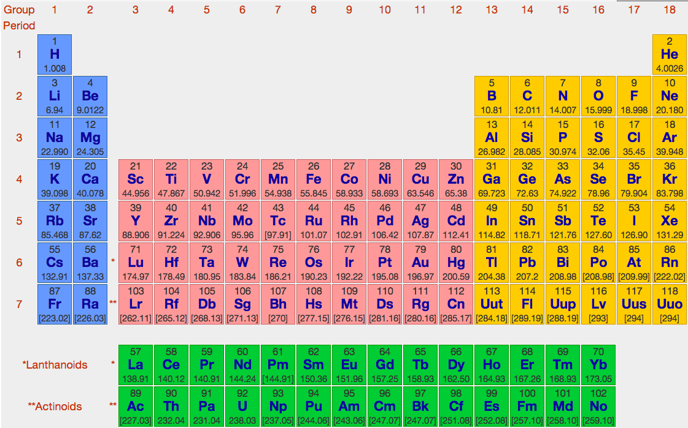
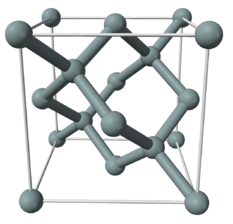
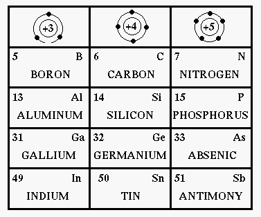
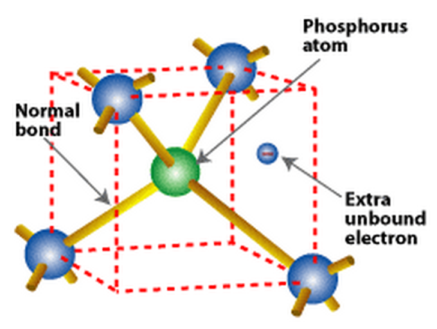
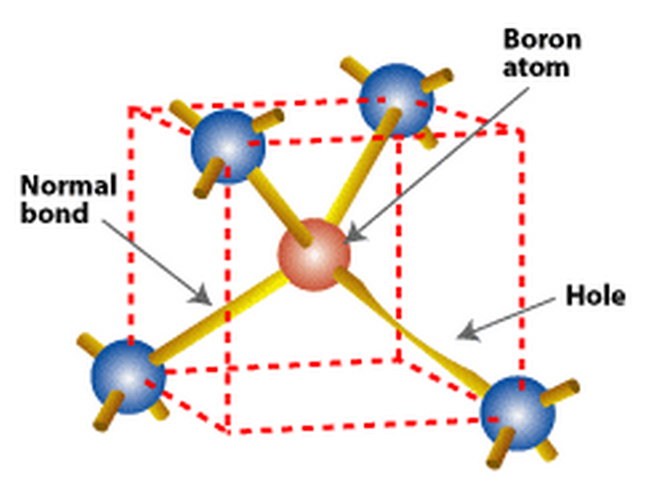
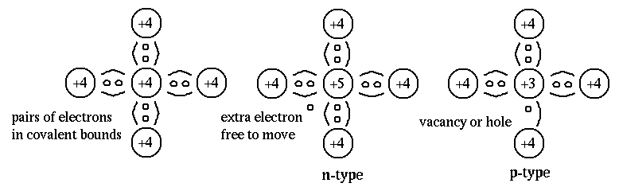
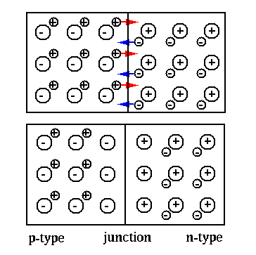
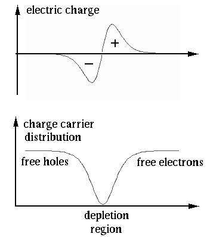
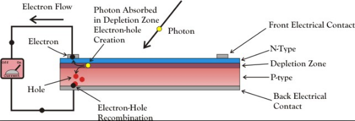

Next: Diodes Up: ch4 Previous: ch4
The vacuum tubes were widely used for various purposes in electronics, mostly voltage and power amplification, before the invention of solid state semiconductor devices in the 1940's. Since then semiconductor devices have gradually replaced vacuum tubes in most of such applications, due to many of their favorable properties such as small size, light weight, low energy consumption, high frequency capability, and high reliability. However, vacuum tubes can still find some applications even today, such as high power radio frequency transmitters and microwave ovens. Although the physics of vacuum tubes and semiconductor devices is very different, the basic functions are similar, such as controlling current through small voltage.
Good conductors, such as copper (Cu ), silver (Ag ), and gold (Au ) can conduct electricity with little resistance because the atoms have only one electron on the out-most layer or shell, called valence electron (VE), which is only loosely bound to the atom and can easily become a free electron freely movable under an applied voltage to conduct electricity.
On the other hand, insulators do not conduct electricity as no free electrons exist in the material.
Here is a table showing the maximum number of electrons in each shell. In general, there are electrons in the nth shell. However, each level is not necssarily completely filled, and the outmost layer, the valence shell, can only have no more than 8 valence electrons.
| (1) |

The conductivity of those elements with four valence electrons in the carbon group is not as good as the conductors but still better than the insulators, and they are given the name semiconductors. The two semiconductors of great importance are silicon (Si ) and germanium (Ge ), both of which have four valence electrons. Their crystal structure lattice has a tetrahedral pattern with each atom sharing one valence electron with each of its four neighbors to form the covalent bonds.
If an electron gains enough thermal energy (1.1 eV for Si or 0.7 eV for Ge), it may break the covalent bond and becomes a free electron of negative charge, while leaving a vacancy or a hole of positive charge. In an electric field, a free electron may move to a new location to fill a hole there, i.e., both such electrons and holes contribute to electrical conduction. Such crystal is called intrinsic semiconductor.
At room temperature, relatively few electrons gain enough energy to become free electrons, the over all conductivity of such materials is low, thereby their name semiconductors, and the material is neither a good conductor nor a good insulator.

The conductivity of semiconductor material can be improved by doping, i.e., by adding an impurity element with either three or five valence electrons, called, respectively, trivalent and pentavalent elements. A semiconductor is called either intrinsic or extrinsic, depending on whether it contains any doped impurity.

 
When a small amount of pentavalent donor atoms (e.g., phosphorus (P) and Arsenic (As)) is added, a silicon atom in the lattice may be replaced by a donor atom with four of its valence electrons forming the covalent bounds and one extra free electron. This is an N-type semiconductor whose conductivity is much improved compared to the intrinsic semiconductors, due to the extra free electrons in the lattice, which are called predominant or majority current carriers. There also exist some tiny number of holes called minority carriers.
When a small amount of trivalent acceptor atoms (e.g., boron (B) and aluminum (Al)) is added, a silicon atom in the lattice may be replaced by an acceptor atom with only three valence electrons forming three covalent bounds and a hole in the lattice. This is a P-type semiconductor whose conductivity is also much improved compared to the intrinsic semiconductors, due to the holes in the lattice, which are called predominant or majority current carriers. There also exist some tiny number of free electrons called minority carriers.

When P-type and N-type materials are in contact with each other, a PN-junction is formed due to these two effects:
Although both sides are electrically neutral, they have different concentration of electrons (the N-type) and holes (the P-type), and a diffusion current is formed by the diffusion of the higher concentration of the freely movable electrons in the N-type material that move across the PN-junction from the N side to the P, due to the thermal motion. They arrive at the P side to fill some of the holes there. Equivalently, we can also consider the holes are diffusing from the P side to the N side.
If no other forces were involved, the diffusion would carry out continuously until the free electrons and holes are uniformly distributed across both materials. However, as the result of the diffusion process, electrical field is gradually established, negative on the side of P-type material due to the extra electrons, positive on the side of N-type material due to the loss of free electrons. This electrical field prevents further diffusion as the electrons on the N-type side are expelled from the P-type side by the electrical field.


The effects of both diffusion and electric field eventually lead to an equilibrium where the two effects balance each other so that there are no more charge carriers (free electrons or holes) crossing the PN-junction. This region around the PN-junction, called the depletion region as there no longer exist freely movable charge carriers, becomes a barrier between the two ends of the material that prevent current to flow through.
Additional notes semiconductor materials can be found here and here.
Solar Cell
A solar cell converts light energy to electrical energy and is a current source. When a photon of light hits a piece of semiconductor material (PN-junction), it either goes straight through material if its energy is lower than the band-gap energy of the silicon semiconductor, or is absorbed by the silicon if its energy is greater than the band-gap energy. In the latter case, an electron-hole pair is produced, and the electron and hole are separated by the internal electric filed near the PN-junction. the electrons are pulled by the positive potential on the N side and the holes are pulled by the negative potential on the P side, thereby forming a current through the external circuit. The solar cell is a current source, as the incoming flux of photons causes the current (not voltage).

Additional notes on photo-diodes, solar cells, and LEDs can be found here.
More detailed discussion about semiconductor physics can be found here